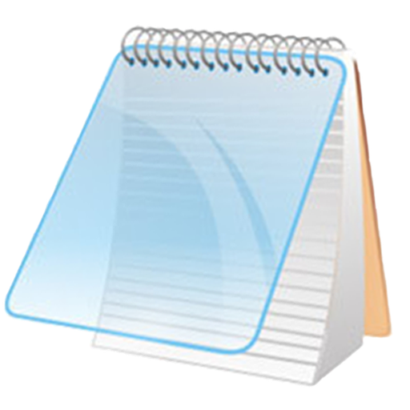
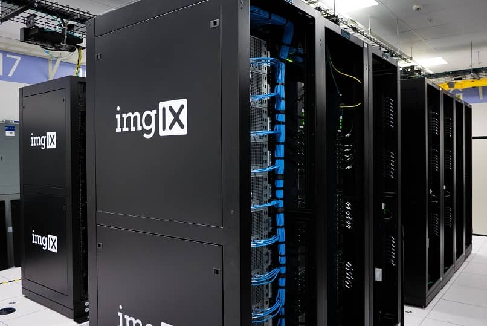
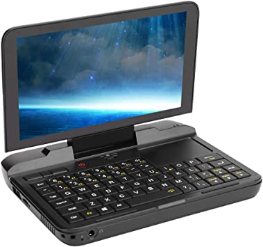
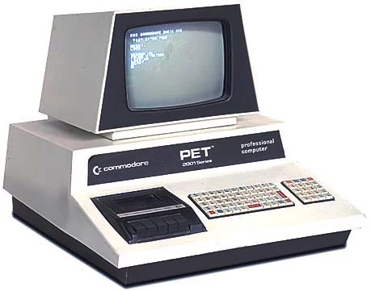

Un ordenador personal, computador personal u ordenador, conocido como PC (siglas en inglés de Personal Computer), es un tipo de microordenador diseñado en principio para ser utilizado por una sola persona. Habitualmente, la sigla PC se refiere a los ordenadores IBM PC compatibles. Un ordenador personal es generalmente de tamaño medio y es usado por un solo usuario (aunque hay sistemas operativos que permiten varios usuarios simultáneamente, lo que es conocido como multiusuario).
Un ordenador personal suele estar equipado para cumplir tareas comunes de la informática moderna, es decir, permite navegar por Internet, estudiar, escribir textos y realizar otros trabajos de oficina o educativos, como editar textos y bases de datos, además de actividades de ocio, como escuchar música, ver videos, jugar, etc. En cuanto a su movilidad podemos distinguir entre el ordenador de escritorio, también llamado ordenador de sobremesa, y el ordenador portátil.
|  |  |  |  |
|---|---|---|---|
Súper computadoras |
Macro computadoras |
Mini computadoras |
Micro computadoras |